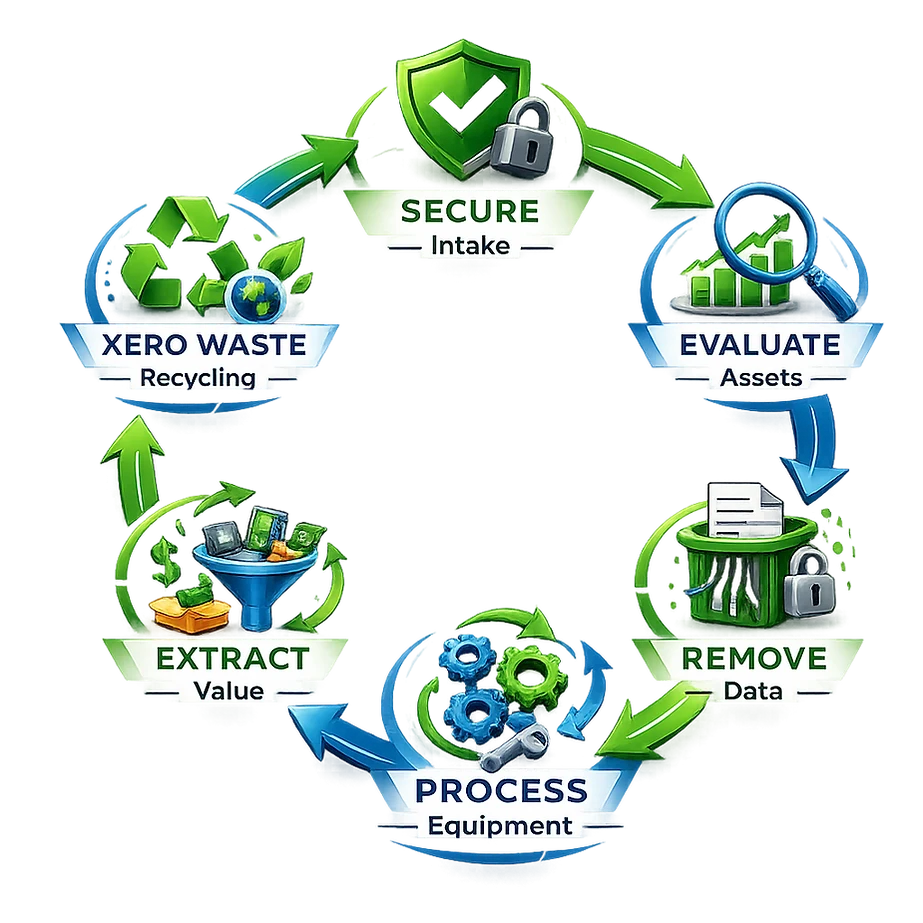
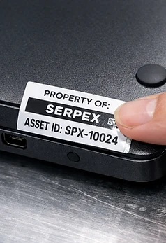
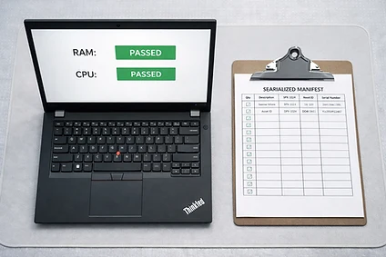
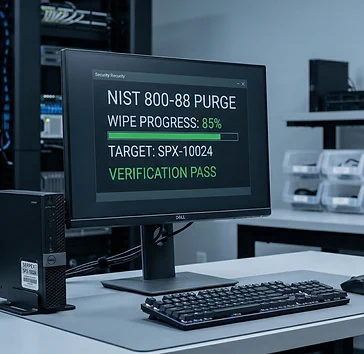
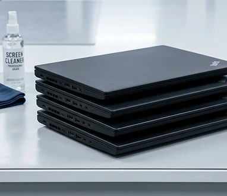
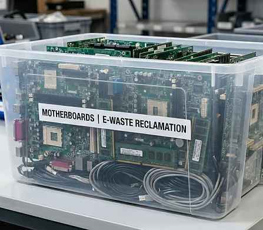

After-Hours Execution
Agree collection timing with your team, primarily evenings and weekends, and review access and operating constraints in advance.
A framework for a documented technology transition.
The end of a device’s primary use should be a managed transition. The Serpex framework connects collection, data handling, recovery, and responsible disposition through six steps.
Our Technology Lifecycle Transition Management approach defines the transition path. Applicable methods, handling arrangements, and destinations are confirmed as part of the assessment.
Built for East Alabama and West Georgia, from after-hours intake to the next chapter of reuse or responsible recycling.

Serving Lanett/Valley, LaGrange/West Point, Auburn/Opelika, and Columbus/Phenix City within our standard 75-mile East Alabama/West Georgia service area. Projects outside our standard service area may be available by arrangement.
Evening & weekend appointments.
Plan collection and handling around your environment, with clear responsibility as equipment moves into processing.
Agree collection timing with your team, primarily evenings and weekends, and review access and operating constraints in advance.
Identify the equipment, record the transfer, and establish the level of asset tracking and documentation your collection requires.
Confirm handling and transfer arrangements so responsibility is understood as equipment moves into processing.
Select a step to see how it fits into the transition.
Arrange collection around operating hours, agree equipment scope, and record the transfer of custody. Discuss identification, custody information, and the level of tracking required for your equipment.

Review hardware specifications, condition, data-bearing media, and reuse potential. The evaluation determines a practical path for the whole device, useful components, or material recovery.

Identify data-bearing media and the required outcome. Any sanitization or destruction work must have an agreed method, responsible operator or provider, and records supporting the actual result.

Equipment with practical reuse potential is prepared through appropriate cleaning, testing, and restoration. Devices without a whole-system pathway may move to component recovery.

Prioritize useful complete devices and components for reuse or redistribution. Continued use comes before material recovery when safe, practical, and consistent with the agreed disposition.
Confirm an appropriate destination and the evidence required for transfer or processing. Collection alone does not establish that downstream recycling or destruction is complete.

View an illustrative collection record →
Discuss your reporting needs before collection. Agree the collection, inventory, authorization, custody, and disposition records required for your job. Customer records describe only work performed and supported by evidence.
Collection information, equipment identification, and disposition details are scoped to the job. View the illustrative record to see the topics to discuss.
Agree the required data-handling records before work. Reports must identify the actual method, result, and limitations; provider records identify who performed the work.
A summary of reuse, component recovery, and downstream routing where tracked. Environmental figures are included only where measured.
A transition is complete when the equipment has an appropriate next destination and the agreed records describe what happened.
Serving Lanett/Valley, LaGrange/West Point, Auburn/Opelika, and Columbus/Phenix City within our standard 75-mile East Alabama/West Georgia service area. Projects outside our standard service area may be available by arrangement.
Evening and weekend appointments. Fees are assessed case by case and agreed before acceptance.